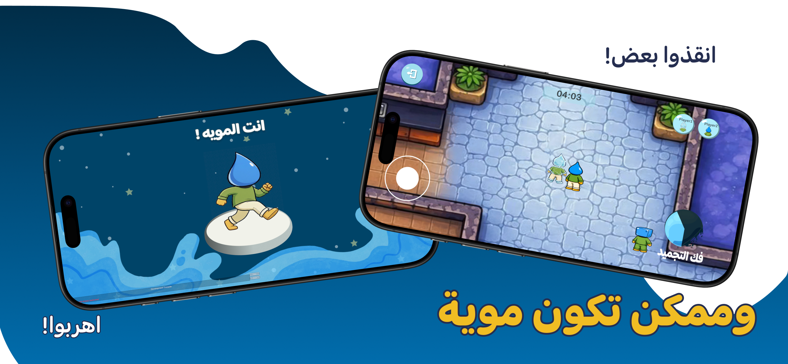

FEATURE 01
Play Together
Players can create rooms, invite friends, choose match duration, and play together online with up to 9 players.
- Room creation
- Join by code
- 3, 6, or 9 players
- Custom match duration
UNITY GAME · ONLINE MULTIPLAYER
An online multiplayer mobile game inspired by the traditional Saudi game “موية وثلج”, built using Unity Netcode, Relay Services, and Lobby Services.
FEATURE 01
Players can create rooms, invite friends, choose match duration, and play together online with up to 9 players.

FEATURE 02
Ice players chase Water players and freeze them before time runs out.

FEATURE 03
Water players cooperate to rescue frozen teammates and survive until the round timer ends.
TECHNOLOGIES